Introduction to Neural Topic Models
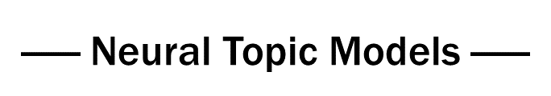

PyTorch implementations of Neural Topic Model varieties proposed in recent years, including NVDM-GSM, WTM-MMD (W-LDA), WTM-GMM, ETM, BATM ,and GMNTM. The aim of this project is to provide a practical and working example for neural topic models to facilitate the research of related fields. Configuration of the models will not exactly the same as those proposed in the papers, and the hyper-parameters are not carefully finetuned, but I have chosen to get the core ideas covered.
Empirically, NTM is superior to classical statistical topic models ,especially on short texts. Datasets of short news (cnews10k), dialogue utterances (zhddline) and conversation (zhdd), are presented for evaluation purpose, all of which are in Chinese. As a comparison to the NTM, an out-of-box LDA script is also provided, which is based on the gensim library.
If you have any question or suggestion about this implementation, please do not hesitate to contact me. To make it better, welcome to join me. ;)
Note: If you find it’s slow to load the pictures of this readme file, you can read this article at my blog.
Table of Contents
1. Installation
$ git clone https://github.com/zll17/Neural_Topic_Models
$ cd Neural_Topic_Models/
$ sudo pip install -r requirements.txt2. Models
2.1 NVDM-GSM
Original paper: Discovering Discrete Latent Topics with Neural Variational Inference
Author: Yishu Miao
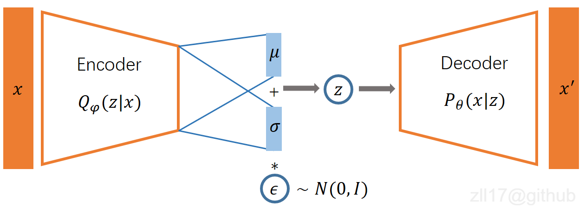
Description
VAE + Gaussian Softmax
The architecture of the model is a simple VAE, which takes the BOW of a document as its input. After sampling the latent vector z from the variational distribution Q(z|x), the model will normalize z through a softmax layer, which will be taken as the topic distribution $ \theta $ in the following steps. Emperically, I found that adding a fully-connected layer before the softmax layer would largely improve the model’s performance, therefore, an optional argument use_fc1 is provided to indicate whether to adopt the affine layer or not. The configuration of the encoder and decoder could also be customized by yourself, depending on your application.
Explaination for some arguments:
–taskname: the name of the dataset, on which you want to build the topic model.
–n_topic: the number of topics.
–num_epochs: number of training epochs.
–no_below: to filter out the tokens whose document frequency is below the threshold, should be integer.
–no_above: to filter out the tokens whose document frequency is higher than the threshold, set as a float number to indicate the ratio of the number of documents.
–use_fc1: adopt an affine layer before the softmax layer when specified.
–auto_adj: once adopted, there would be no need to specify the no_above argument, the model will automatically filter out the top 20 words with the highest document frequencies.
–bkpt_continue: once adopted, the model will load the last checkpoint file and continue training.
Run Example
$ python3 GSM_run.py --taskname cnews10k --n_topic 20 --num_epochs 1000 --no_above 0.0134 --no_below 5 --criterion cross_entropy --use_fc1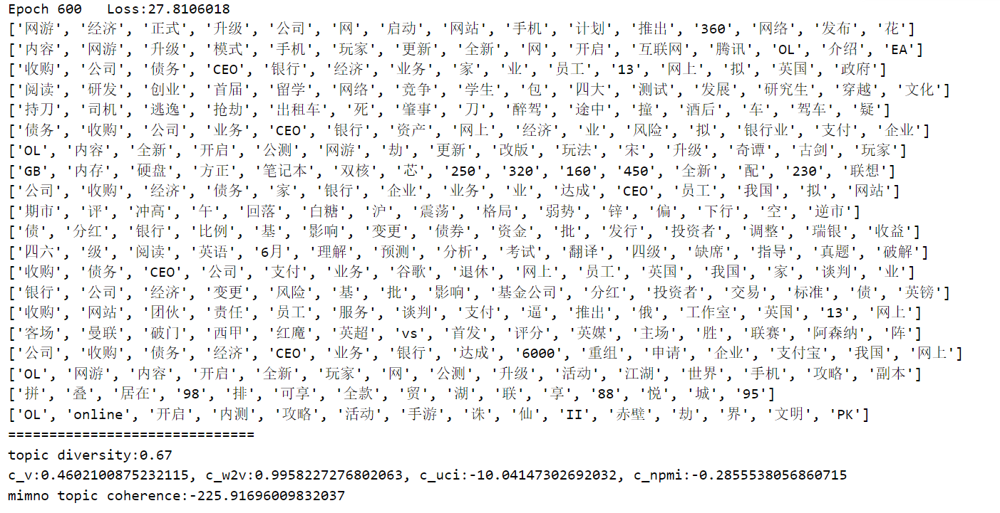
2.2 WTM-MMD
Original paper: Topic Modeling with Wasserstein Autoencoders
Author: Feng Nan, Ran Ding, Ramesh Nallapati, Bing Xiang
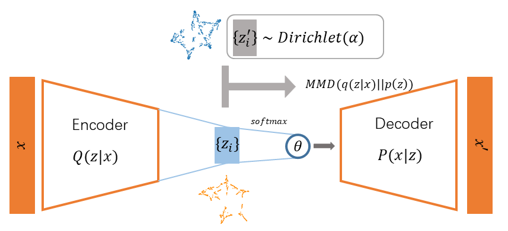
Description
WAE with Dirichlet prior + Gaussian Softmax
The architecture is a WAE, which is actually a straightforward AutoEncoder, with an additional regulation on the latent space. According to the original paper, the prior distribution of the latent vectors z is set as Dirichlet distribution, while the variational distribution is regulated under the Wasserstein distance. Compared with the GSM model, this model can hugely alleviate the KL collapse problem and obtain more coherent topics.
Explaination for some arguments:
–dist: the type of the prior distribution, set as dirichlet to use it as the WLDA model.
–alpha: the hyperparameter $\alpha$ in the dirichlet distribution.
The meaning of other arguments can be referred to the GSM model.
Run Example
$ python3 WTM_run.py --taskname cnews10k --n_topic 20 --num_epochs 600 --no_above 0.013 --dist dirichlet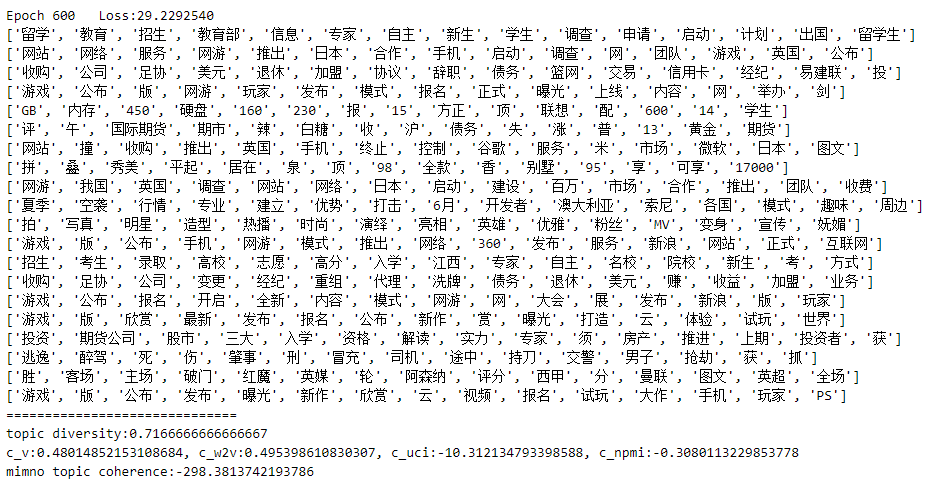
2.3 WTM-GMM
Original paper: Research on Clustering for Subtitle Dialogue Text Based on Neural Topic Model
Author: Leilan Zhang
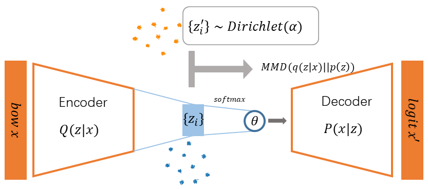
Description
WAE with Gaussian Mixture prior + Gaussian Softmax
An improved model of the original WLDA. It takes gaussian mixture distribution as prior distribution, which has two types of evolution strategy: gmm-std and gmm-ctm (GMM-standart and GMM-customized for short, respectively). The gmm-std adopts Gaussian mixture distribution, whose components have fixed means and variances, while those of the gmm-ctm will adjust to fit the latent vectors through the whole training process. The number of the components is usually set as the same as the number of topics. Emperically, the WTM-GMM model usually achieve better performance, both in topic coherence and diversity, than WTM-MMD and NVDM-GSM. It also avoid the mode collapse problem, which is a problem plagues the GMNTM for a long time. I personally recommend this model.
Explaination for some arguments:
–dist: the type of the prior distribution, set as gmm-std or gmm-ctm to use the corresponding model.
The meaning of other arguments can be referred to the GSM model.
Run Example
$ python3 WTM_run.py --taskname zhdd --n_topic 20 --num_epochs 300 --dist gmm-ctm --no_below 5 --auto_adj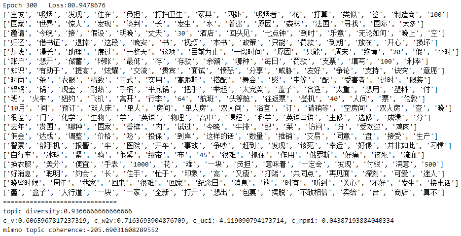
2.4 ETM
Original paper: Topic Modeling in Embedding Spaces
Author: Adji B. Dieng, Francisco J. R. Ruiz, David M. Blei
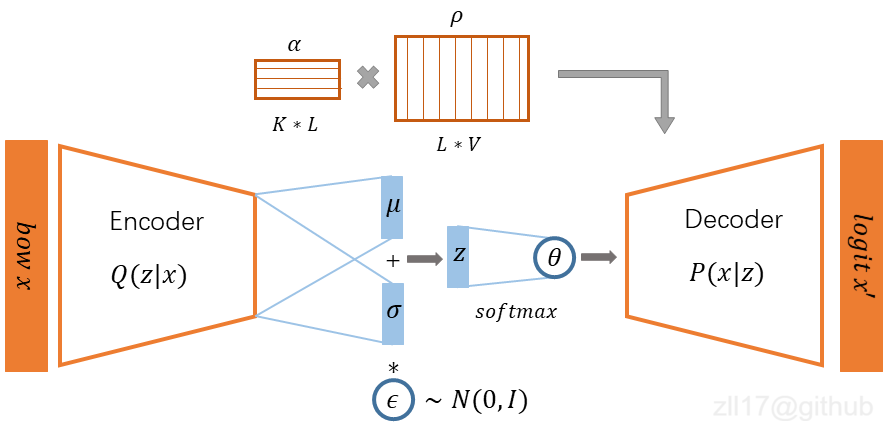
Description
VAE + Gaussian Softmax + Embedding
The architecture is a straightforward VAE, with the topic-word distribution matrix decomposed as the product of the topic vectors and the word vectors. The topic vectors and word vectors are jointly trained with the topic modeling process. A note-worthy mentioned advantage of this model is that it can improve the interpretability of topics by locatting the topic vectors and the word vectors in the same space. Correspondingly, the model requires more time to converge to an ideal result than others since it has more parameters to adjust.
Explaination for some arguments:
–emb_dim: the dimension of the topic vectors as well as the word vectors, default set as 300.
The meaning of other arguments can be referred to the GSM model.
Run Example
$ python3 ETM_run.py --taskname zhdd --n_topic 20 --num_epochs 1000 --no_below 5 --auto_adj --emb_dim 3002.5 GMNTM
Original paper: Research on Clustering for Subtitle Dialogue Text Based on Neural Topic Model
Author: Leilan Zhang
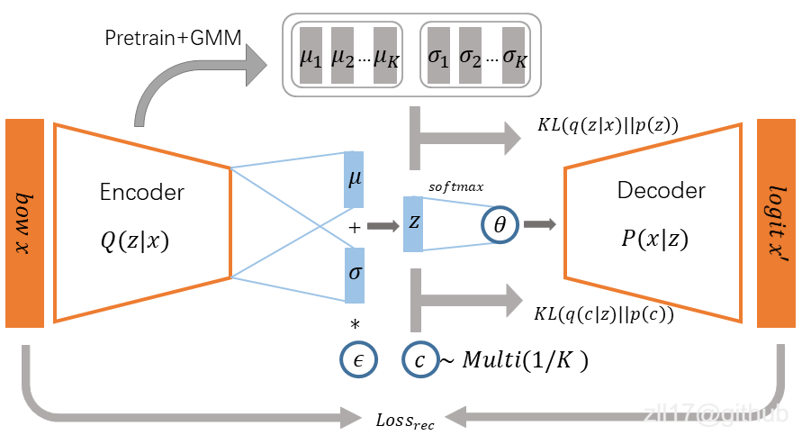
Description
The architecture is based on VaDE, which takes Gaussian mixture distribution as a prior distribution. Different from the Wasserstein distance adopted by WAE, the VaDE uses KL divergence to measure the discrepancy of prior and variational distribution. It adopts a discrete variable to indicate the belonging component and a continuous variable to indicate the vector in latent space. The original intent of the GMNTM is to improve the model’s representation ability with the import of the multi-mode distribution, to replace the single-mode multivariate Gaussian distribution utilized in GSM. Empirically, it does obtain a series of more diverse and coherent topics than GSM does. However, it suffers from the mode collapse problem, which will finally result in a series of homogeneous topics. Therefore, the training process should not be too long and should be stopped before the collapse occures.
Any suggestions are welcome.
Run Example
$ python3 GMNTM_run.py --taskname zhdd --n_topic 20 --num_epochs 300 --no_below 5 --auto_adj2.6 BATM
Origianal paper: Neural Topic Modeling with Bidirectional Adversarial Training
Author: Rui Wang, Xuemeng Hu, Deyu Zhou, Yulan He, Yuxuan Xiong, Chenchen Ye, Haiyang Xu
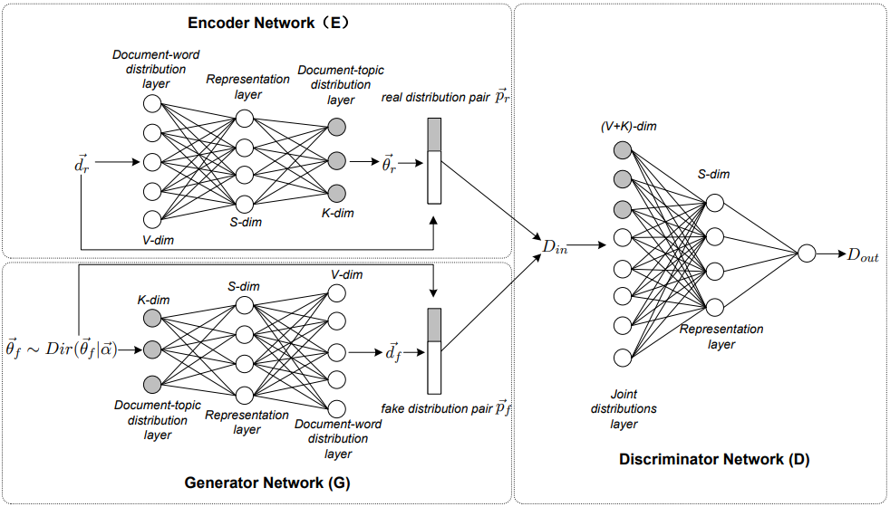
Description
GAN+Encoder
This model is made up of three modules: a Generator, a Discriminator, and an Encoder. The Encoder takes in a real document and outputs its topic distribution vector, concatenated with the normalized BOW of the original document. The Generator will takes in samples from a prior Dirichlet distribution and produce BOW vector of the fake document, concatenated with the sample distribution vectors. The Discriminator maximizes the likelihood of the real distribution pairs and minimizes the likelihood of the fake distribution pairs. Once done the training, the Encoder could output the topic distribution given a document, while the generator could output the topic-word distribution. Althrough it seems like a feasible approach to accomplish the topic modeling task through this adversarial way, my implement of this model cannot work properately. I still work on it and look for solutions. Any ideas or suggestions would be welcome.
Run Example
$ python3 BATM_run.py --taskname zhdd --n_topic 20 --num_epochs 300 --no_above 0.039 --no_below 53. Datasets
- cnews10k: short cnews sampled from the cnews dataset, in Chinese.
- zhddline: a dialogue dataset in Chinese, translated from the DailyDialog dataset by Sogou translation API.
- zhdd: Every conversation is concatenated as a document to be processed. There’re 12336 documents in total.
- 3body1: The famous science fiction The Three-Body Problem, each paragraph is taken as a document.
Basic statistics are listed in the following table:
| dataset | num of document | genre | avg len of docs | language |
|---|---|---|---|---|
| cnews10k | 10k | short news | 18.7 | Chinese |
| zhddline | 96785 | short utterances | 18.1 | Chinese |
| zhdd | 12336 | short dialogues | 142.1 | Chinese |
| 3body1 | 2626 | long novel | 73.8 | Chinese |
Some snippets
3.1 cnews10k
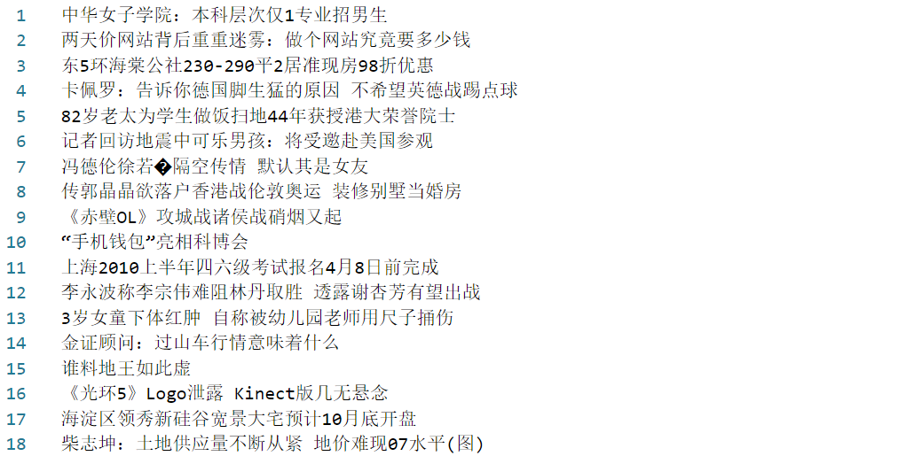
3.2 zhddline
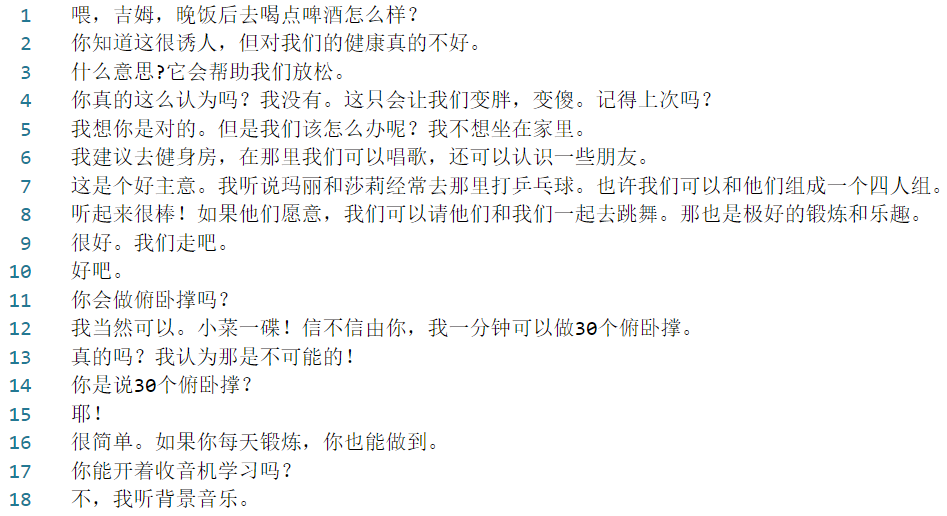
3.3 zhdd
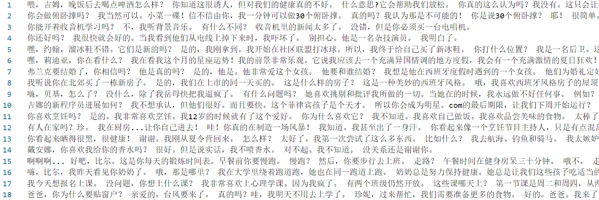
3.4 3body1
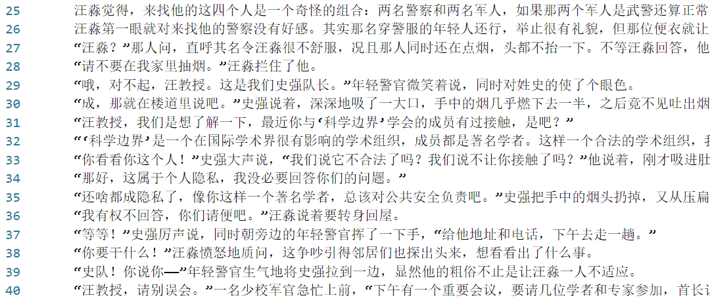
4. Usage
In this section, I will take the zhddline text data as an example and display how to apply the WTM-GMM model on it to modeling its topics. You can use your own text data and follow the same steps.
4.1 Preparation
First, prepare the text data. One line will be taken as one document, so you need to keep one document in one line, in our example, each utterance per line.
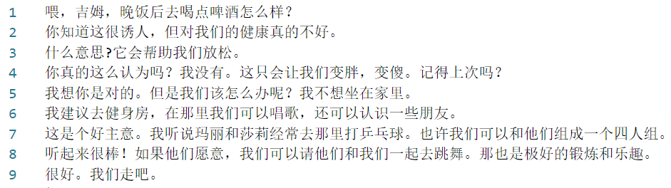
Then modify the name of the text file into the format {taskname}_lines.txt, in this case, zhddline_lines.txt. Put the renamed file in the data directory.
Finally, choose the right tokenizer or create one by yourself. The tokenizer should be customized according to text type. The default configuration utilizes HanLP as tokenizer to deal with modern Chinese sentences. If you need to process other types of text (i.e. in English or in ancient Chinese), open the file tokenization.py , modify the code in function Tokenizer accordingly.
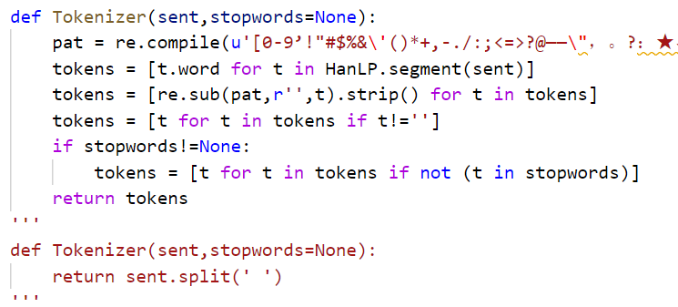
4.2 Run
Once done the preparation job, run the corresponding running script, in this case, you need to set the taskname as zhddline and specify other necessary arguments.
$ python3 WTM_run.py --taskname zhddline --n_topic 20 --num_epochs 1000 --no_below 5 --dist gmm-std --auto_adjThe model will evaluate the topic coherence and topic diversity every 10 epochs, and display the top 20 topic words for each topic. The weight of the model will be stored in the ckpt directory once the training is done. The result of the topic modeling is shown below.
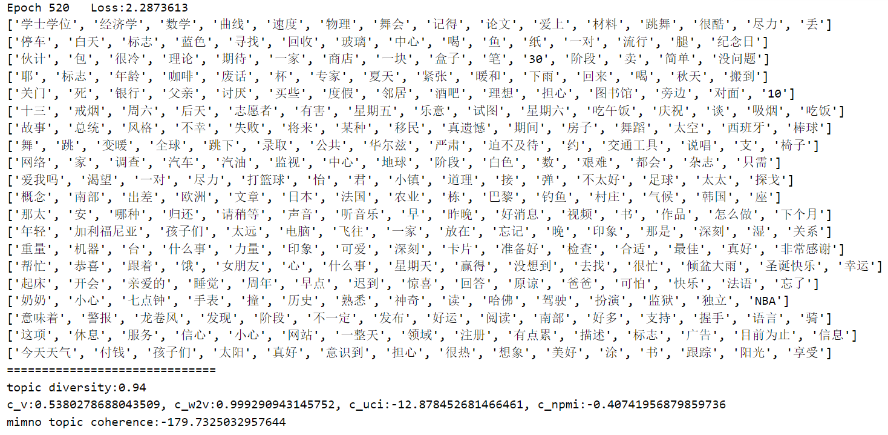
5. Acknowledgement
I would appreciate my supervisor Prof. Qiang Zhou for his helpful suggestions to these neural topic models. A big part of this project is supported by him.
In the construction of this project, some implementations are taken as reference, I would like to thank the contributors of those projects:
I would also give thanks to @NekoMt.Tai for her kind shares of her GPU machines with me.
License
Apache License 2.0
Cite: If you find this code useful in your research, please consider citing:
@misc{ZLL2020,
author = {Leilan Zhang},
title = {Neural Topic Models},
year = {2020},
publisher = {GitHub},
journal = {GitHub repository},
howpublished = {\url{https://github.com/zll17/Neural_Topic_Models}},
commit = {f02e8f876449fc3ebffc66f7635a59281b08c1eb}
}
若干神经主题模型（Neural Topic Model, NTM）的PyTorch实现，包括NVDM-GSM、WTM-MMD (W-LDA)、WTM-GMM、ETM、 BATM 和 GMNTM。
近年来基于VAE和GAN的神经主题模型的各类变种，相比于经典的统计主题模型（如LDA等），能提取到更一致的主题。NTM在稀疏性十分严重的场景下所提取到的主题，其一致性和多样性都优于LDA，是一种强大（且有意思）的模型。此项目的初衷是提供一组方便、实用的神经主题模型实现，包括部分论文的复现及我自己的改进模型。项目中的模型配置与原论文未必完全一致，但保留了原论文中心思想。
此项目提供有三个中文短文本数据集——新闻标题数据集（cnews10k）和对话数据集（zhdd 和 zhddline），作评测之用。作为对比，提供了基于gensim编写的LDA脚本，开箱即用，且接口与NTM保持一致。
如果你对某些实现有疑问或者有更好的想法，欢迎加入我。
Note：由于国内访问GitHub不便，如果你遇到ReadMe图片加载不出的问题，可以访问我的blog查看其拷贝。
目录
TODO
训练模型权重保存- log 曲线绘制
- 文档-主题分布推断
- ETM 主题向量、词向量获取、保存
- 隐空间绘制
- 中文文档完善
- 各个模型性能对比
- 阶段性保存权重，断点续训
- 高亮推荐模型
- DETM
1. 安装
$ git clone https://github.com/zll17/Neural_Topic_Models
$ cd Neural_Topic_Models/
$ sudo pip install -r requirements.txt2. 模型
2.1 NVDM-GSM
论文: Discovering Discrete Latent Topics with Neural Variational Inference
作者: Yishu Miao
Description
VAE + Gaussian Softmax
模型输入是文档的词袋表示BOW，其架构为简单的VAE。从变分分布 Q(z|x)中采样出隐变量z后，模型会通过softmax层将z规范化，并将规范后的向量作为文档-主题分布 $ \theta $ 。经过一些试验，我发现在softmax层之前加上一个仿射层会极大地改善模型的性能，因此这个实现中有一个可选参数use_fc1**用以选择是否启用这一仿射层。模型中，编码器和解码器的具体配置（如层数，维度等）都可以定制，取决于你的应用场景。
参数解释：
–taskname: 用以主题建模的数据集的名字。
–n_topic: 主题数。
–num_epochs: 模型总共的训练轮次。
–no_below: 为整数，文档频率小于该阈值的词将会被过滤掉。
–no_above: 为(0,1)之间的实数，是比例值，文档频率高于该阈值的词将会被过滤掉。
–use_fc1: 在softmax层之前启用一个仿射层。
–auto_adj: 当启用此参数时，不必再设定no_above参数，文档频率最高的20个词将会自动被滤去。
–bkpt_continue: 启用此参数时，模型会加载最新的checkpoint文件，并在此基础上继续训练。
Run Example
$ python3 GSM_run.py --taskname cnews10k --n_topic 20 --num_epochs 1000 --no_above 0.0134 --no_below 5 --criterion cross_entropy --use_fc1
2.2 WTM-MMD
论文: Topic Modeling with Wasserstein Autoencoders
作者: Feng Nan, Ran Ding, Ramesh Nallapati, Bing Xiang
Description
WAE with Dirichlet prior + Gaussian Softmax
模型结构是WAE，本质上是一个对隐空间施约束的自编码器。 根据原论文，模型将隐变量z的先验分布取为Dirichlet分布，在Wasserstein距离下对变分分布进行优化。与GSM模型相比，该模型可以极大地缓解KL崩塌的问题，获得一致性更高的主题。
参数解释：
–dist：先验分布的类型，当启用W-LDA模型时需设置为dirichlet。
–alpha：dirichlet分布中的超参数$ \ alpha $。
其余参数的意义可参考 GSM 模型。
Run Example
$ python3 WTM_run.py --taskname cnews10k --n_topic 20 --num_epochs 600 --no_above 0.013 --dist dirichlet
2.3 WTM-GMM
论文: Research on Clustering for Subtitle Dialogue Text Based on Neural Topic Model
作者: Leilan Zhang
Description
WAE with Gaussian Mixture prior + Gaussian Softmax
原WLDA的改进模型。 它以高斯混合分布作为先验分布，具有两种训练策略：gmm-std和gmm-ctm（分别为GMM-standart和GMM-customized的缩写）。 gmm-std采用高斯混合分布，其成分具有固定的均值和方差，而gmm-ctm的成分将在整个训练过程中进行调整以拟合隐变量。 其成分数通常设置为与主题数相同。 经验表明，与WTM-MMD和NVDM-GSM相比，WTM-GMM模型通常在主题一致性和多样性上都具有更好的性能，它还避免了长期困扰GMNTM的模式崩塌问题。 在选择GMM作先验的模型中，该模型是不错的选择。
参数解释：
–dist：先验分布的类型，可设为gmm-std或gmm-ctm以启用对应的模型。
其余参数的意义可参考 GSM 模型。
Run Example
$ python3 WTM_run.py --taskname zhdd --n_topic 20 --num_epochs 300 --dist gmm-ctm --no_below 5 --auto_adj
2.4 ETM
论文: Topic Modeling in Embedding Spaces
作者: Adji B. Dieng, Francisco J. R. Ruiz, David M. Blei
Description
VAE + Gaussian Softmax + Embedding
模型结构为简单的VAE，其主题-词分布矩阵被分解为主题向量和词向量的乘积。其中，主题向量和词向量通过与主题建模过程联合训练获得。值得一提的是，该模型可将主题向量和词向量放入同一空间中来提高主题的可解释性。 由于需要调节的参数更多，与其他模型相比，该模型需要更多时间才能收敛到理想结果。
参数解释：
–emb_dim：主题向量的维度，默认为300。
其余参数的意义可参考 GSM 模型。
Run Example
$ python3 ETM_run.py --taskname zhdd --n_topic 20 --num_epochs 1000 --no_below 5 --auto_adj --emb_dim 3002.5 GMNTM
论文: Research on Clustering for Subtitle Dialogue Text Based on Neural Topic Model
作者: Leilan Zhang
Description
模型结构基于VaDE，该模型将高斯混合分布作为先验分布。 与WAE采用的Wasserstein距离不同，VaDE使用KL散度来度量先验分布和变分分布的差异。 它采用离散变量表示所属成分，采用连续变量表示隐空间中的向量。 GMNTM的初衷是通过引入多峰分布来提高模型的表示能力，以取代GSM中使用的单峰多元高斯分布。 从经验上讲，它确实比GSM获得了一系列更加多样化和连贯的主题。 但是，它存在模式崩溃问题，最终将导致一系列同类主题。 因此，训练过程不应太长，并且应在崩溃发生之前停止训练。我正在解决这一问题，改进后的模型随后会添加到新版本中。欢迎提供各种思路和建议。
[[Paper](On the way)] [Code]
Run Example
$ python3 GMNTM_run.py --taskname zhdd --n_topic 20 --num_epochs 300 --no_below 5 --auto_adj2.6 BATM
论文: Neural Topic Modeling with Bidirectional Adversarial Training
作者: Rui Wang, Xuemeng Hu, Deyu Zhou, Yulan He, Yuxuan Xiong, Chenchen Ye, Haiyang Xu
Description
GAN+Encoder
该模型由三个模块组成：生成器，判别器和编码器。 编码器接收真实文档，输出其主题分布向量，并将其与原始文档的归一化BOW连接。 生成器将从先验的Dirichlet分布中获取样本，生成伪造文档的BOW表示，并将其与分布的样本向量连接在一起。 判别器会最大化真实分布对的概率，并最小化伪造分布对的概率。 训练完成后，编码器可以输出给定文档的主题分布，而生成器可以输出主题词分布。通过这种对抗方式来完成主题建模任务看起来似乎是可行的，但是我的实现还不能正常运行。我目前仍在寻找解决方案，欢迎提供任何思路或建议。
Run Example
$ python3 BATM_run.py --taskname zhdd --n_topic 20 --num_epochs 300 --no_above 0.039 --no_below 53. 数据集
cnews10k: 从 cnews 数据集中选取的中文新闻标题数据, 短文本。
zhddline: 中文对话数据集, 从 DailyDialog 数据集翻译而来（基于搜狗翻译API），短文本。
zhdd: zhddline的会话版，每一个会话被拼接为一个文档，长文本。共有12336个文档。.
3body1: 著名科幻小说《三体1-地球往事》，每一段落被作为一个文档，长文本。
上述数据集的基础统计信息列于下表：
| dataset | num of document | genre | avg len of docs | language |
|---|---|---|---|---|
| cnews10k | 10k | short news | 18.7 | Chinese |
| zhddline | 96785 | short utterances | 18.1 | Chinese |
| zhdd | 12336 | short dialogues | 142.1 | Chinese |
| 3body1 | 2626 | long novel | 73.8 | Chinese |
数据集片段展示
3.1 cnews10k
3.2 zhddline
3.3 zhdd
3.4 3body1
4. 使用教程
在本节中，我将以zhddline文本数据为例，展示如何应用WTM-GMM模型对其进行主题建模。 你可以使用自己的文本数据，只要遵循相同步骤即可。
4.1 Preparation
首先需要准备文本数据，一行作为一个文档。在示例zhddline中，每行是一句对话话语。
然后将文本文件的名称修改为{taskname} _lines.txt，例如修改为“ zhddline_lines.txt”。 将修改后的文件放在“data”目录下。
最后，选择合适的分词器（没有合适的就自己写一个）。 分词器应根据文本类型定制。默认配置使用HanLP作为分词器来处理现代汉语句子。 如果你需要处理其他类型的文本（如英语或古汉语），可打开文件tokenization.py，并修改Tokenizer函数的代码。
4.2 Run
准备工作完成后，运行模型对应的run脚本，在示例zhddline中，将taskname设置为zhddline并指定其他必要的参数。
$ python3 WTM_run.py --taskname zhddline --n_topic 20 --num_epochs 1000 --no_below 5 --dist gmm-std --auto_adj模型每10个epoch后会评价主题的一致性和多样性，并显示每个主题的前20个主题词。训练完成后，模型的权重将存储在ckpt目录中。 主题建模的结果如下所示。
5. Acknowledgement
感谢我的导师 周强 教授对我在主题建模问题上的启发和提供有用的建议。此项目的很大一部分都得益于他的支持。
在构建此项目的过程中，我参考了一些模型的实现，在此谨向这些项目的贡献者表示感谢：
感谢 @柚子酱 慷慨分享GPU服务器给我 :-D
License
Apache License 2.0
Cite: If you find this code useful in your research, please consider citing:
@misc{ZLL2020,
author = {Leilan Zhang},
title = {Neural Topic Models},
year = {2020},
publisher = {GitHub},
journal = {GitHub repository},
howpublished = {\url{https://github.com/zll17/Neural_Topic_Models}},
commit = {f02e8f876449fc3ebffc66f7635a59281b08c1eb}
}本博客所有文章除特别声明外，均采用 CC BY-SA 4.0 协议 ，转载请注明出处！